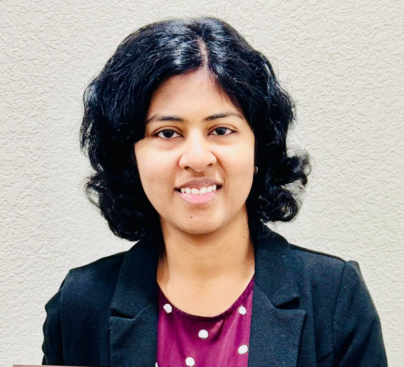
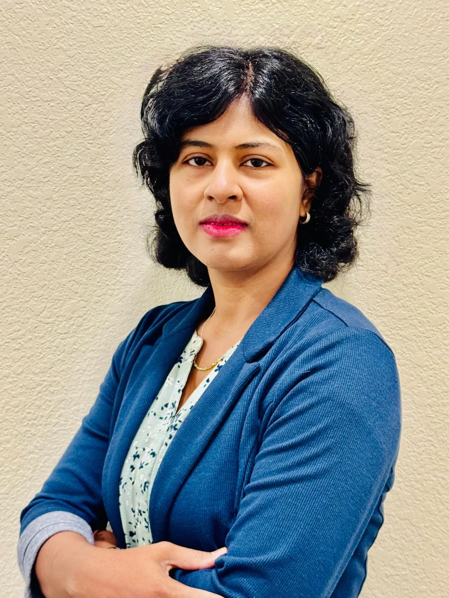

Portfolio
Side projects & case studies
A selection of AI/ML, big-data, HCI, and analytics work — including academic and product deep-dives.
- All
- AI & ML
- Big Data
- Human–Computer Interaction
- Analytics
Leading cloud & AI engineering at scale
I build and improve the systems behind exabyte scale cloud services at Microsoft. My work combines distributed systems, observability, and applied AI to help engineers detect issues, diagnose failures, and operate cloud infrastructure more efficiently.


Nothing in life is to be feared, it is only to be understood. Now is the time to understand more, so that we may fear less. — Marie Curie · a quote Aarthi lives by
I like hard engineering problems.
The kind where the system is large, the requirements are messy, reliability matters, and solving the technical problem is only half the challenge. The other half is figuring out how to make the solution safe, repeatable, and useful to hundreds of other engineers.
I’m Aarthi Anbalagan, a software engineer and applied AI leader with 15+ years of experience across distributed systems, cloud infrastructure, data platforms, and AI.
At Microsoft Azure, I work on hyperscale engineering problems spanning production automation, reliability, telemetry, analytics, and agentic engineering. One of the questions I’m particularly interested in today is: How do we let AI and automation do substantially more engineering work without giving up the safeguards required in production?
That question shows up in my work on ZeroToil, where we are turning manual troubleshooting procedures into governed production workflows, and in my work on AI engineering, where I help teams move from experimenting with AI to redesigning engineering workflows around it.
I also believe technical impact multiplies when knowledge does. I lead AI Champs and AI Learning initiatives that have grown into a broad engineering movement: 31 AI projects delivered, 83.9% moderate/high AI engagement, and an AI learning program with more than 15,000 views and 700 AI citations. Some of those projects have taken workflows from hours to minutes and compressed months of development into weeks.
Over the years, I’ve worked across cloud systems, observability, capacity planning, healthcare software, telecommunications R&D, and academic research. I’m an IEEE Senior Member, published author, speaker, peer reviewer, mentor, and Azure Core Culture Catalyst Impact Award recipient.
But the title or technology is rarely what keeps me interested.
I’m happiest when I can take something complicated, understand why it is complicated, build a better system around it, and leave behind something that enables other people to move faster than they could before.
I build cloud platforms, make production systems easier to operate, and apply AI where it solves real engineering problems.
Building AI-assisted incident triage and on-call handover tools, and helping engineering teams use AI in their daily work.
Designing lifecycle, migration, and observability for exabyte-scale storage — Azure Data Lake & Cosmos Store — with 10×–100× performance improvements.
Building telemetry pipelines that make large systems easier to operate, including re-engineering event processing with OpenTelemetry.
A summary of technical contributions across Microsoft, Brown University, GE Healthcare, and Nokia Networks.
Current role: Tech Lead on XDataScienceCore within Azure Storage.
University of Texas · Austin, TX
Oct 2023 – Apr 2024 · GPA 4.0
Brown University · Providence, RI
Aug 2016 – May 2018 · GPA 3.9 · Magna Cum Laude
Coimbatore Institute of Technology (affiliated with Anna University) · India
Jul 2005 – Jun 2009 · GPA 3.8 · Governor's Gold Medal
A blend of deep technical expertise and the human skills to lead, advocate, and scale adoption.
A selection of AI/ML, big-data, HCI, and analytics work — including academic and product deep-dives.
Selected honors for engineering, AI leadership, and academic achievement.
Recognized for building AI learning and adoption programs across Azure Storage.
Continuous learning across AI, cloud, data, and leadership.
Giving back through open source, community leadership, and mentoring the next generation of engineers.
My GitHub open-source contribution during my internship to the MSSQLServer repo was presented at the 2017 Nordic Infrastructure Conference in Oslo, Norway.
See GitHubActive contributor to the Microsoft Fabric Community, sharing knowledge and helping practitioners adopt modern data & analytics tooling.
View Fabric badgesI mentor junior engineers on applying AI and was recognized by ADPList as a Top 50 Mentor in AI/ML Engineering.
View ADPList certificateHackathons and events: Advised and judged Microsoft AI hackathons in 2025 and participated in 2023. Organized the Interface technical symposium in 2007.
Making complex AI and engineering topics simple and accessible for everyone.
Whether it's a speaking invitation, a collaboration on AI & cloud, mentoring, or an interesting problem to solve — I'd love to hear from you.
I usually respond within a couple of days.